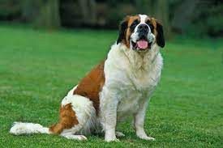

Raça: São Bernardo
A raça do cachorro São Bernardo tem uma aparência de um animal um tanto quanto "bobo", mas a sua forma de se comportar e imponente
Mas as aparências enganam, pois ele pode servir como um otimo cão de guarda, um bom protetor para sua família
Eles são cachorros bem amigaveis com seus tutores e odeiam ficar sozinhos
Voltar